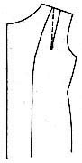
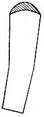

1936—Home Sewing Course
by Helen Hall
Series 5—Tailoring
Tailoring
Tailoring is easy
A coat or suit can be made as easily as a silk dress if these rules for tailoring are followed accurately. More time is required for pressing and marking sewing lines than in dressmaking, but if each problem is perfected as it is encountered, and the coat is made and assembled as herein directed, it can be easily made at home.
Requires accuracy
Tailoring requires more accuracy than dressmaking. All sewing lines must be marked, must be matched perfectly, basted closely, and stitched straight. The iron must be used frequently, pressing before basting, pressing before stitching and pressing after stitching. Haphazard methods that might be used in some dressmaking do not produce perfect results in tailoring.
Modern tailoring
"Dressmaker coats" are coats made with softer lines, without the severe lines of mannish tailoring. The padded shoulders and fronts made of heavy tailor's canvas used years ago in all tailored coats are not used in modern tailoring. The padded bust forms are omitted and even if a thin piece of tailor's canvas is used down the front of the mannish tailored coats, or the buttonholes are worked by hand, a careful dressmaker can make these garments beautifully.
Learn to tailor wool
Lessons on tailoring should be learned on woolen material. The same rules will apply to tailoring cottons, silks and linens, but the full effect of the accurate methods can better be applied to wool. It is the constant pressing that perfects tailoring, and as wool is easily pressed with perfect results, it is easier to tailor wool than any other material. The rules for pressing silk and velvet are quite different and if the pressing is not done perfectly, the garment will look homemade.
Nap and pile
While the nap and pile material is not so difficult to sew, it does require extra precaution when cutting. Plaids and stripes must also be cut and matched carefully and should be sewed carefully to secure the desired effect. (See lessons on materials.)
Loose weaves
Loosely woven fabrics must also be handled more carefully as they will stretch on the bias and will fray out on clipped corners. Loose weaves should be well shrunk before they are made.
Velvet
Tailoring velvet or velveteen should only be attempted after a coat has been made of wool and after the rules for pressing velvet are fully understood. (See lesson on pressing.)
Silk
A silk coat can usually be made according to the rules for dressmaking, but collars, cuffs, pockets and linings will be made and applied as in the rules for tailoring. The pressing will be as frequent but will be done differently. (See lesson on pressing.)
Pressing silk
Practice pressing silk on a sample. Some silks will water spot and the moisture must be used carefully. Place the seam or hem on the press board. Place a dry cloth over the seam to be pressed. Brush over this dry cloth with a sponge or small wet cloth, that has been wrung almost dry. Press the dry cloth over the seam. The small amount of moisture that will be absorbed into the dry cloth will be all that is necessary to press the seam or hem to a keen edge. If the first pressing does not press the edge flat, repeat the operation.
Open the seams
All seams should be pressed open in tailoring unless the seams are to be flat stitched. If flat stitched, the seam is first stitched on the wrong side; it is then pressed to one side, is flat stitched from the right side and then pressed again.
Bastings should always be removed after stitching and before the seam is either pressed open or pressed flat. Clip the threads of the basting and draw them out with closed scissors points or a safety pin. Do not use the needle to remove bastings as this will bend the needle and ruin it for straight sewing.
Test for shrinking
All woolen material must be shrunk before it is made. The selvage must also be cut from the edges before shrinking. To test the material to ascertain if the material has been preshrunk, place one corner on the press board and place a wet cloth over it. Set the warm iron on the wet cloth and permit it to steam through to the wool. Lift the iron and cloth and see if the goods has shrunk around the iron mark. It will be drawn up at this spot if the goods needs shrinking. If it remains flat and smooth it has been preshrunk and is ready to use after the selvage is removed. (See lesson on shrinking.)
Check the pattern
Check the pattern to determine whether any adjustments are necessary. Carefully follow the pattern layout, unless the adjusted pattern makes it impractical. A safe rule to follow is to cut all sections of the pattern running in one direction. (See lesson on cutting intricate materials.)
Marking sewing lines
All seams should be marked on the sewing line either with tailor's tacks or with dressmaker's tacks. The latter is quicker and easier to make and are made along a chalk line marked on the goods. (See lesson on marking sewing lines.)
Use a double thread. Baste down the line to be marked, catching one close stitch; then skip a two-inch space and take another close stitch. Continue to the end of the line. Then clip all the long threads apart that are joining the stitches. (See lesson on stitches.)
Be sure to open the seam on the side and not at the end. Open the seam so that these stitches are visible, then draw the seam apart one quarter of an inch and clip the threads apart. After the two edges are separated, clip off the long threads on the top of the goods. The short threads will remain in the material better than the long threads.
Mark darts
All inner sewing lines in tailoring must be marked. As wool is too heavy to crease-mark, it is advisable to thread mark. (See Series 2.) After the thread marks have been matched and pinned together in making a seam or dart, it should be chalk-marked before basting and stitching, marking with tailor's chalk and ruler.
Mark all sewing lines
Both sides of the coat must be made alike and perfect sewing lines must be followed. Therefore use a ruler or yardstick and chalk mark all sewing lines, and then thread tack. In tailoring, even more than in dressmaking, much of the success depends upon the accuracy with which the sewing lines are followed.
Joining the seams
Baste all portions as they lie flat on the table. Assemble the back of the coat complete if there are several sections. Match one seam over the other, carefully matching the sewing lines. Place the more bias section on top. Match the top and bottom of the seam and straighten the section to position and then pin before basting. Pin the top and bottom of the seam before the centers are pinned.
Baste closely
Baste the seams together closely. Loose, wide bastings cannot be used in tailoring if accurate results are desired. If the material is heavy, use heavy basting thread. Remove the pins after the seam is basted.
Baste the darts
All darts should be pinned together before they are basted to prevent twisting. Place the front edge of the dart on the bottom as it is the straighter edge and the back edge on top as it is more bias. Start to pin from the bottom to the top, matching the sewing lines. It will be necessary to turn over the seam as the pins are placed to secure the correct placement. After the darts have been pinned and basted they are ready to stitch. Care must be taken to have the stitching without any wavering along the line. When it is a dart with perfectly straight lines, use a ruler and a piece of tailor's chalk to mark the sewing line, then stitch on the chalk line instead of on the basting line. (See lesson on darts.)
Coat Lining
Two methods of lining coats
The coat lining should be made while the coat is being made if the easiest method is desired. A lining can be set into the coat after it is made, but the method given in this lesson gives the quickest method, which is used in factories for women's coats, while the tailor uses the custom-made or hand applied method of setting in the lining after the coat is finished, which is also used on men's coats.
Quick method
The coat is made complete and lining is made complete before the outer edges are joined. Two coats are actually made and then they are stitched together all around the outer edge. The outer coat is made complete with the sleeves set in and the collar attached and then pressed. The lining is then stitched to the front facing and to the back of the neck facing, the sleeves are set into the lining and the collar attached and then both coats are joined together all around the outer edges.
Accuracy
This method of making coats is quicker than the custom-made method, but it requires great accuracy so that all seams can be joined perfectly on the inside. It cannot be used in a coat where the lining pattern differs from the pattern used for the outer fabric.
Alterations in both
Any alterations that might be made in the outer coat when fitting must also be made on the inner coat, which will be the lining. All seams must be made exactly alike.
Front edge
Coats made of thin or loosely woven material will require a reinforcement down the facing and on the collar. A light weight tailor's canvas is excellent. Heavy coat canvas is too heavy for ordinary use and is only used on the mannish tailored coats. Preshrunk, unbleached muslin may also be used if the light weight linen is not available. The reinforcing material is cut on the bias and is cut from the same pattern as the facing and collar.
Baste to place
The reinforcement material is then basted to the coat side of the garment, catching it to the coat on the inner edge with long, loose stitches, catching but one thread of the wool, and back stitching the loose stitch every three inches to hold it in place. Also baste at the outer edge. The collar will also have the collar reinforcement basted to it on all sides and it will be held in place on all seams when the collar is joined to the coat. This will permit outer collar and facing to be free from the reinforcement when the two coats are made as the outer collar is on the lining. Do not confuse the reinforcement with the interlining, which is made differently and will be explained later.
Intricate seams
All intricate seams should be joined as directed in tailoring. If the seams are angular or are difficult to join perfectly, it may be necessary to use the right side basting as directed in the lesson on this subject. This basting will perfect any seam.
Right side basting
Prepare the seam, basting the edge to the wrong side over the sewing line of one single thickness of material and pressing it flat. Place the seam to which it is to be joined on the table and arrange the prepared section over it on the right side and pin to place. Slip-stitch the seam from the right side, catching a thread of the under section and sliding the needle into the fold of the upper section. Tack at the points and corners so that it will be held firmly in place, and press well.
Remove the first basting, turn to the wrong side, clip in any inner points, so the seam can be turned back, lift the creased seam and stitch on the crease. If flat stitching is to be used it will be flat stitched after it is stitched on the under side of the seam.
Flat stitch
All seams that are to be flat-stitched are first stitched on the wrong side in a regular seam. The seam is then pressed over to the side indicated for the flat stitching and the ridges are pressed perfectly flat before the stitching is made. The thinner the material the closer to the edge the flat stitching is made unless otherwise designated in pattern. The flat stitching will be made through three thicknesses of the material and the seam is not pressed open.
If the goods is quite heavy it may be necessary to loosen the top tension. After the flat stitching is completed, press the seam again with a wet cloth on the wrong side. All seams must be stitched and finished complete on each section before the side seams are joined.
Back complete Front complete
Make the back of the coat complete, joining all intricate seams, making any darts, tucks or pleats. Join the back of the waist to the back of the skirt section if the back is in two parts. Press all seams and lay aside.
Make all the front complete.
Make all bound buttonholes (see lesson on buttonholes) and pockets (see lesson on pockets) before the front is joined to the back. Make all seams of the front section, pressing and flat stitching if directed in the pattern. The fronts should be finished complete to the final pressing before it is joined to the back or to the lining. If the coat requires an alteration, it is advisable to run a colored basting thread down the altered seams for a guide and then rip the coat apart and make as directed. All alterations made on the coat will also be made on the lining.
Tailoring—Group II
Bound buttonholes
Bound buttonholes are made of the same material as the coat and should be made in the coat before the lining is applied. It is advisable to make a sample buttonhole first. The binding material is cut on the lengthwise thread (the selvage down the long side of the material). Cut the scrap at least an inch longer and at least three inches wider than the buttonhole.
Mark the line for the buttonhole with chalk and then baste with small stitches along this line, as the stitching will be made from the wrong side; but the scrap is placed on the right side of the goods. Pin the scrap to the right side, evenly spaced over the basted line, with an equal portion on each side and at each end. (See complete lesson on buttonholes.)
Stitch
Stitch the width of the binding according to the thickness of the material. Thin material may be made with the edge but an eighth of an inch wide, heavy material may be a quarter inch but not wider. Gauge the stitching from the center line; stitch to the corner, lower the needle into the goods, raise the presser foot and turn the goods, lower the foot and count the stitches across the end. Three to five stitches are sufficient. The end stitches should touch the basted mark for the buttonhole, Repeat the perfect corner stitching continuing down the outer side and then count the stitches across the other end. This is important.
Turn and press
Slash the center line leaving a point of goods at each end. Pull the goods
through the slot and press out the opening, making perfect corners. This
is one of the secrets of perfect buttonholes.
leaving a point of goods at each end. Pull the goods
through the slot and press out the opening, making perfect corners. This
is one of the secrets of perfect buttonholes.
Then bring up one edge to fill half the opening and press it flat with moisture. Bring up the other edge to fill the complete opening. Turn to the under side of the binding, lift the corners, and stitch across the point; trim off. (See complete instructions for bound buttonholes.) After the buttonholes are made the coat can be attached to the lining.
Unless there is a special pattern for the lining, use the front section of the coat pattern to cut the front of the lining. Cut off the width of the facing, allowing for the seam. Then use the remaining portion of the front pattern for the silk lining. Join the facing to the lining and press the seam flat but not open, pressing over the silk edge but not the wool edge.
Match the complete front of the lining to the complete front of the coat before the side seams are joined. They should match perfectly on all edges as the seams will later be sewed together on the inside of the coat.
Back of lining
The back of the lining must be cut larger through the center back to prevent a drawing through the shoulders. When a special lining pattern is provided, follow the instructions accompanying it. Otherwise, use the same pattern as the coat back; place it off the fold of the material, one-half inch at the neck and slope it so that the lining is the same width as the outside at the hem. Press the extra amount over the edge of the pattern into a fold. This will be set into the coat as a fold.
Facing in the back
The lining will wear better if a wool facing is flat stitched to the lining at the back of the neck. This facing can be cut from the back pattern if a pattern for this section is not furnished. It should be cut the same width on the shoulder seam as the end of the front facing. It is machine-stitched around the raw edge of the curve; the edge is turned under and basted flat. It is then pinned and basted and flat stitched to the silk lining that was made with the extra fold in the center. The silk can be trimmed from under the facing after stitching.
Stay tape for armhole
A stay tape is now stitched to the upper edges of the front and back of the coat at the sleeve-seam and around the neck. This should be stitched to the wrong side of the goods and should be a narrow thin preshrunk tape (one quarter-inch wide). This tape will prevent the armhole from stretching and will hold it firmly in place. It will also be stitched around the armhole of the set-in sleeve after the shoulder seam is joined.
The sleeve
The epaulet or raglan sleeves should now be basted to the body extending the seams to the neck. The seams are pressed open or are pressed downward and flat-stitched as directed.
Pockets
All pockets must be made before the lining is applied. (See lesson on pockets in this series.)
Shoulder seam
The shoulder seams must be joined, for the set-in sleeve, before the collar is attached. The shoulder darts have been basted, stitched and pressed, trimmed off and the seam has been pressed open, pressing any pucker at the end of the dart flat. (See lesson on darts.) The front shoulder seam is usually cut a trifle narrower than the back seam. The ends of the seam are matched and pinned at the sewing lines, working with the back seam uppermost. After the two ends are pinned, then the seam is matched at the sewing line, pinned, basted and stitched. The seam is then pressed open.
Dart in lining
The front dart must also be placed in the lining. It is basted in but is not stitched; the basting is removed when the coat is finished. Tuck the dart to the front, do not open the dart by cutting. The shoulder seam of the lining will be stitched across the shoulder dart as it is basted, pinning and matching the back seam as directed. The back neck facing has been flat-stitched to the back of the lining as directed and the edges of the two narrow portions of the wool facing at the shoulder seam should match.
The under-arm seam remains open on both the coat and the lining until the collar is stitched to place. If the sleeve is an epaulet or raglan shoulder, the sleeves are set into both the coat and the lining to make the neck line complete. All seams are pressed open or flat-stitched while the under-arm seam remains open.
The collar
The collar is now applied, matching it to the center back. The under collar is basted to the coat and the outer collar is basted to the facing and lining, as this collar will roll over and be on the outside when it is finished. The collar lengths should be exactly the same. After the two collars are carefully matched and basted to place, they are again measured, then stitched, and the seam is pressed open. If the collar is a notched collar as in the mannish coats, be sure to allow for a seam at the notch. If the inner curve is clipped into the sewing line at the notch while the material is still on the pattern, this seam allowance would be noticed and would not be forgotten.
When making a notched collar, it is advisable for the amateur to baste over the seam and press both points of the notch and trim off the points before the two collars are joined. It will make the joining easier as the sewing lines will be perfectly marked.
The under collar should be smaller than the outer collar on woolen fabrics so that the seam will roll under when finished and will make the edge seam invisible. (See lesson on collars.) The under collar is trimmed off one quarter-inch around the outer edges. Notched collars will not only be trimmed on the outer edge but will also be trimmed off at the notch on the facing, gradually diminishing the trimming to nothing at the neck line. The seam will be trimmed from one-eighth to a quarter inch, depending upon the weight of the material. The thicker material will require the quarter-inch trim, while the thinner material will only need one-eighth.
 Join collars
to coat
Join collars
to coat
Join the outer collar to the facing and the under collar to the coat along the neckline. Both these seams will then be pressed open. This is a step that is always required in good tailoring and is so often omitted. If this seam is not pressed open a bulge will develop when the two collars are placed together and the effect will be quite "home made." Press the seams to a keen edge and do not trim off the seam, as one side of the seam will be used later to hold the two collars together on the inside of the coat.
Straighten the seam
The under-arm seam will now be joined, placing the seams flat on the table. Place the back on the bottom and lay the front sections over it. Pin the seams to place and then baste carefully, matching the sewing lines as marked or altered. Baste the same seams on the lining.
For light weight wool, place the side seam on the press board, flatten the seam to one side and press the seam on the coat with a damp cloth. This will give a perfectly straight line to follow for the stitching. Lift the creased seam and stitch on the crease on both the lining and the coat, then press the seam open. Heavy wool, satin and velvet should have all seams chalk-marked with a ruler before stitching.
Armhole stay
The armhole is now stayed with a narrow tape, or it can be stayed before the underarm seam is joined. This stay will hold the armhole in shape and will prevent the seams from bursting when the coat is worn.
Set the sleeve
Set the sleeve into the armhole according to the pattern notches. A quick, easy method of setting sleeves without gathers is given in the lesson on sleeves.
Tailored sleeve cap
If a mannish coat is being made, the fullness around the sleeve cap must be shrunk out before the sleeve is set. Place two rows of gathers around the sleeve cap a half-inch apart. Draw up the gathers and tack to the size of the armhole. Turn the sleeve wrong side out; slide the cap over the small end of the press board. Place a wet cloth on it and press shifting the gathers until all the fullness disappears.
The stay
A tape stay should be basted and stitched all around the edge of the coat. Baste and stitch the tape to the wrong side of the seam so it will remain in the coat. The edge stitching will be made on one edge of the tape and on the sewing line.
Work with both coat and lining
When the sleeves are set into the coat they should be set into the lining also. When the collar facing is attached to the coat, the collar is attached to the lining. This method will often prevent errors when alterations are made. If any alteration is made on the outer coat, the same amount should also be altered on the lining.
If the coat is to be interlined, this is done before the lining sections are joined. (See lesson on interlining.)
Two coats
There will now be two perfectly matched coats—one, the outer coat with the collar facing attached and the other will be the lining with the facing and outer collar attached. (See other lessons.) They will now be joined around the outer edges.
Do not spare the pressing. Good tailoring requires much pressing. Each section should be finished and pressed complete before the next step is taken. The pressing not only perfects the work and makes the next step easier but also gives a finished effect which is encouraging as the work progresses.
Reinforcement
Reinforcement versus inter lining
The terms interlining and reinforcement are often confused. The interlining is used to make the coat heavier and is stitched in with the seams of the lining, while the reinforcement is the tailor's canvas or preshrunk unbleached muslin that is stitched to the wool material to make the edge firm.
A medium weight unbleached muslin is preshrunk thoroughly, wetting it and pressing it when almost dry. If tailor's canvas is used, it should not be any heavier than the muslin. The heavy canvas is only used for the mannish tailored coats. The canvas does not require shrinking.
All the edges of loosely woven material, such as light weight tweed, should be reinforced; the front edge of the jacket or coat, the neck, the complete armhole and the lower edge of the coat or jacket. The cap of the sleeve should also be reinforced, as well as the lower edge of the sleeve. The fullness at the cap of the sleeve should be gathered twice and shrunk out (see lesson on shrinking) before the bias strip of muslin is basted to the V-shaped cap. All collars and cuffs are also reinforced.
All reinforcing material should be cut on the bias, two to three inches is usually sufficient. Place the wool section on the muslin with the longest section on the most bias part of the goods. Cut off the exposed edge, remove the wool and cut off a three-inch width following the shaped edge cut from the wool.
The muslin is then basted to the wrong side of the edge for which it was cut. It is basted to place with the material resting flat on the table. Machine stitch the outer edge close to the sewing line and just outside of it. This reinforcement will be caught into the seam of the wool.
After the edge is stitched the raw edge is then trimmed off as closely as possible to the seam, only about an eighth of an inch remaining. The loose edge is then caught loosely to the wool with thread of a matching color.
Tailoring—Group III
Lining and Coat Joined
Join the two coats
The outer coat will be placed on the table right side up with the wrong side next to the table, the sleeves will also be turned wrong side out.
Join the edges
Place the lining coat over the outer coat and push the lining sleeves into the coat sleeves, then pin the two coats together at the center of the back of the collar. Pin all joining seams of the collar. They should be perfectly matched. Slide the basting board under the edge of the coat and pin; then baste the long coat facing to the coat edge, making the edges match perfectly.
Join the collars
The two outer edges of the collars will now be joined together. Match the center backs and pin, then match any points and seams. Ease the larger collar to match the smaller collar, pinning and basting from the side of the larger collar or from the facing side of the coat. Carefully watch the sewing lines, as the wider seam allowance will be followed when basting. Some of the original seam allowance has been trimmed off the under collar. The original seam on this piece is ignored. Make all seams equal width.
Baste the coat edge
The long coat edge down the front should be matched, pinned and basted flat on the table or on the basting board. If the back and front sections of the lining and coat match perfectly the outer edges should match.
 Press open edge
Press open edge
After the collar edge is stitched and the facing is joined, this seam must be pressed open. This is an important step and is usually omitted. A perfect edge cannot be turned unless the seam is pressed open, and the seam cannot be pressed open if it is trimmed off before it is pressed. If the corner is small and it is difficult to turn it and press the seam open, one side of the seam can be pressed back, as it remains wrong side out. Press one edge back; then turn the material over and press the other edge back. If the seam can be opened out it will be easier to press it flat.
Trim off
After the seam is pressed open it can now be trimmed off to one-quarter-inch. If the collar is curved, clip the edges with notches so that the turned seam will not develop a bulk at the edge. Clip off all outer corners and clip in all inner points, then turn the edge and baste flat.
Hem allowed on sleeves
Coat sleeves usually have a hem allowance of about an inch and a quarter for a hem, which is turned up without a seam at the edge. Even if the coat has a cuff, the sleeve is hemmed and the cuff is finished complete and then applied. Hems are also allowed on loose coat sleeves unless the lower edge is curved or shaped. A fitted facing is then used as a finish.
Reinforcement
If the sleeve at the wrist will not be finished with a cuff, the edge should be reinforced with a two-inch bias strip of thin tailor's canvas or a preshrunk bias of medium weight, unbleached muslin. This is applied after the sleeve is sewed together. Crease back the lower edge of the coat sleeve to determine the exact sleeve length. Turn the sleeve to the wrong side and baste this strip on to the wrong side of the sleeve, using thread that matches the coat goods, as the stitches will remain in the coat. Baste the lower edge of the strip to the edge of the crease, not the sleeve edge, basting to the coat side and not the hem side. Hold the muslin rather close, stretched slightly, as it is basted over the heavy material and when it is turned it will be under it and should be smaller. Overlap the ends on the straight thread of the muslin and not on the bias. Catch to the seams of the coat. Leave the top edge free. Turn the hem back over the muslin and catch to place with loose stitches before the lining is brought down and over it.
Wrist of mannish coats
The wrist finish of a mannish tailored coat has a simulated opening on the back edge. Extra material is allowed on the pattern to finish this opening. When the back seam of this sleeve is basted, baste to the edge of the sleeve and across this extra material. It is advisable to chalk mark this line for basting, continuing the line of the side seam. This basting will later be removed but is necessary for perfect tailoring.
The sleeve seam will then be stitched as directed in the pattern, stitching around the edges of the extra fold. Turn the sleeve right side out and press up the hem, making a crease at the edge of the turning. Use a wet cloth for pressing. Turn the sleeve wrong side out and baste in the reinforcement as directed. If the material is heavy, some of the surplus material of the pleat can be trimmed away on the wrong side from the under part of the hem only. The buttons used on this sleeve are sewed through both edges of the fold but not the lining. Remove the basting at the edge when finished.
Applied cuffs
All cuffs that are made on woolen coats should be made separate from the coat. The sleeve edge is finished with a hem and without any reinforcement. The cuff is made complete and is slip-stitched to the coat edge, usually dropping a trifle below the sleeve edge. Fur cuffs are often made larger than the sleeve at the wrist and are caught only at the seam. (See lesson on cuffs.)
Pockets
Slot pockets, which are often made on tailored short coats, are made similar to a bound buttonhole. Tailored pockets with a welt are also easily made. The lower side of the pocket material is lifted and pressed to fill the opening with the top section pressed down over it. (See complete lesson on pockets.)
Patch pockets are lined and made complete before they are applied to the coat. All pockets are made before the front of the coat is attached to the back or the lining is joined. If a pocket is desired in the lining of the coat, it should be made and set in before the lining is attached to the coat. One side of the pocket opening is attached to the lining and the other side to the coat. (See full directions in lesson on pockets.)
Join edges
After the outer coat is complete with the facing of the collar attached and the lining is complete with the outer collar attached, the two coats are placed on the table and the collar edges carefully pinned together, then pinned down the front and basted. After the edge is stitched straight, the seam if pressed open before the coat is turned and basted all around the edge. After the edge is finished, the lining seams and the coat seams are attached on the inside of the coat by reaching up into the coat and drawing them out, after they are pinned from the right side.
Joining Lining Seams to Coat Seams
Seams of neck lines joined
The neck line seam of the coat must be joined to the neck line seam of the lining on the wrong side of the coat. Fasten the seams together at the neck. Bring the neck line of the facing, matching the two opened seams, face to face and pin together along the full length of the seam matching the centers. The two protruding edges of the seams, which will be the lower edge of each seam, will now be sewed together by hand with heavy thread on the wrong side. This step is most important and is usually omitted, permitting the collar and lining to slide out of position and producing a "home made" appearance.
Back of armhole
The back of the armholes of the coat are now attached to the back armholes of the lining. The shoulder seam is matched and the under-arm seam is matched. The armholes are then matched between these two points, hand-sewing the two opened seams face to face, sewing the back part of the edges. They will be perfectly matched and lapped with one seam on top of the other. Join the seams of both sleeves from the inside between the two coats.
Sleeves seams attached
The sleeve lining will now be attached to the lining of the coat on the wrong side at the under-arm seam. The sleeve lining and coat are wrong side out. The sleeve seam is pinned to the coat seam of the sleeve working from the armhole downward. When the elbow is reached a half-inch fold is made in the lining of the sleeve seam and attached to the coat seam to make the lining looser than the coat. The two seams are then joined to within three inches of the wrist. The seams are joined as they are pressed open.
The wrist
After the seams are joined, reach into the sleeve from the coat side and turn it wrong side out. Finish the hem as directed and turn under the lining one inch from the edge and catch to the hem of the sleeve.
Side seams
The side seams of the coat and lining should now be joined together. Place the coat on the table with the lining uppermost and with the right side of the lining out. Place a row of pins down the side seams on the front edge of the seam, slightly stretching the seam of the coat and not the lining seam, so that the lining seam will be looser than the coat seam.
After the full length of the seam is pinned together reach up into the back of the coat and draw out this seam from the armhole. Sew the two back edges of the seam together to within six inches of the hem. Repeat on the other side seam.
The hem
The  length of the coat should now be marked, and the lower edge of the facing
should be pinned to the coat while it is on the figure. Place the pins along
the edge of the hem. The coat is then removed and placed on the table. The
edge of the hem is basted across the front facing, basting the facing to
the coat as it hangs open. Place the coat on the press board, lining side
up, and bring the hem of the facing and coat over the lining and press. This
will make a crease for a perfect hem across both the facing and the hem and
will prevent the facing from dropping below the hem line of the coat. Remove
the basting, turn the facing back to the wrong side and baste the edges together,
matching the creases, then machine stitch or hem straight across. If the
material is heavy the facing should then be trimmed back to a seam's width.
If the material is light weight, the hem can be creased up on this line and
finished as a hem, then caught at the edge across the opened facing and coat.
length of the coat should now be marked, and the lower edge of the facing
should be pinned to the coat while it is on the figure. Place the pins along
the edge of the hem. The coat is then removed and placed on the table. The
edge of the hem is basted across the front facing, basting the facing to
the coat as it hangs open. Place the coat on the press board, lining side
up, and bring the hem of the facing and coat over the lining and press. This
will make a crease for a perfect hem across both the facing and the hem and
will prevent the facing from dropping below the hem line of the coat. Remove
the basting, turn the facing back to the wrong side and baste the edges together,
matching the creases, then machine stitch or hem straight across. If the
material is heavy the facing should then be trimmed back to a seam's width.
If the material is light weight, the hem can be creased up on this line and
finished as a hem, then caught at the edge across the opened facing and coat.
The coat hem can be cross-stitched or slip stitched to the coat without turning under the edge at the hem, if the lining is to be attached to the coat at the hem. If the lining is to be free of the hem, then the hem will be finished with ribbon seam binding and the lining will be hemmed and caught to the coat at the side seams.
Pressing Send to the presser for the final finish, if so desired.
Tailoring—Group IV
Unlined Coats
Facing
Coats made without a lining should have the facing or a partial lining extend to the underarm seam for a depth of two inches at the under-arm curve. The back will also be lined to this depth. This facing and lining will be made of the same material as the coat, or can be extended from the regular width of the facing with lining material. In this case the lining material will also be used for the back facing below the two-inch material facing at the neck in the back. This will join to the shoulder seams of the front facing. The wool material of the facings will be flat-stitched to the lining as directed for the neck facing at the back in the lining.
Seam finish
The hem of the unlined coat is finished with binding. The seams are bound either with bias seam-binding or the bias binding may be made of lining material, as all the seams must be finished. The binding made from the material offers a wider width with which to work and is easier to handle.
The hem
The hem of the coat is hung, pressed back and made perfectly flat with no darts or gathers. (See lesson for making hems.) Mark off an even width and baste the binding to the hem with the basting board or magazine placed between the hem and the coat.
Interlinings
A coat will be given more body and more warmth if an interlining is added. This can be made of cotton flannel or thin interlining wool. The latter is preferable as it gives more warmth with less bulk. Thin cotton flannel is excellent to give material more body, in material such as silk, if added warmth is not desired.
The interlining is cut from the pattern of the lining. Each section of the lining is opened and placed on the interlining material and basted all around the edges before it is cut. The interlining will remain basted to the silk until the side seams are joined when all four thicknesses of material will be stitched into one seam and the seams pressed open.
The interlining is cut much shorter than the lining, usually extending below the hips but not to the hem. The sleeves are only cut to the top of the cuff. The lower edge hangs loose from the side seams.
The center back of the lining is cut wider than the coat and the interlining will also be cut wider, but the heavy material should not be folded into a dart. Split the center back of the interlining to below the shoulders and overlap the top to match the coat. The slash remains open for freedom through the back.
The front dart is treated in the same manner. The dart line is split and overlapped and is not folded in as it will be in the silk lining. Overlap and baste the interlining to the shoulder seam and then baste the silk.
The front facing is stitched to the front edge of the lining only, the seam is pressed flat, over toward the lining, then the interlining is caught to this seam with loose stitches before the facing is joined to the coat. It is not seamed into the seam with the lining.
Hand Applied Linings
Relining coats
The lining that is applied by hand-sewing is made differently. This method is used by the tailor and is used when relining coats.
The pattern
If a coat is to be relined, save the old lining, rip it apart and press flat for a pattern. It is difficult to secure a perfect pattern for the lining without the old pattern as a guide. The new lining should be cut exactly like the old lining without allowances. If the old lining fit the coat, it will make a perfect pattern for the new lining.
Cut and stitch
Cut the lining and stitch it together on the side seams. The sleeve linings are made and set into the coat after the body is lined. The shoulder seam remains open until later. The side seams are also pressed open.
If a bust form is available it will be convenient to use but it is not a necessity. If the form is used, place the coat on the form wrong side out, and set the lining onto the coat.
The side seams of the lining can either be machine stitched, pressed open and attached to the side seams of the coat as previously described, or the front sections of the lining can each be basted to the back edge of the side seams and shoulder seams as the garment lies flat on the table, and the back section of the lining will then be basted over the front section, with the edges of the seams turned under, turning them at the center of the pressed open seam of the outer coat. The lining is then slip stitched down with the tailor's slip stitch. (See lesson on hem.)
Facing
Slide the long basting board or magazine into the front of the coat as it is folded to the center front. Bring the lining to the front and over the facing, turn under the edge of the lining and pin. Pin the full length of the facing edge before basting as this line must be perfectly arranged without drawing. The coat again is slightly stretched so that the lining will be looser than the coat.
The dart
Fold under the dart toward the front and baste the front edge of the lining to the shoulder seam of the coat,. These stitches will remain in the coat; make them on the back edge of the seam. Baste the dart shut. After it is pressed, the basting will be removed. The dart is not stitched shut, but is needed for looseness across the chest.
The back of the lining, is then brought over the front at the shoulder seam, turning under all edges. It is now ready to apply by hand.
 Sleeves
Sleeves
The sleeves are now set into the armhole. The coat sleeve is first turned wrong side out and the lining wrong side out. Be sure to select the lining that belongs to the sleeve, do not reverse the linings. Slide them onto the arm as they bill be worn to be sure of the right lining.
The side seams of the sleeves lining are then basted to the side seams of the coat with a tuck in the lining at the elbow to prevent any drawing on the outer sleeve. (See lined coats.) The seams are both pressed open and one side of the seam only is basted. Both the coat sleeve and the sleeve lining are wrong side out. (See previous method.)
There are two methods of finishing the sleeve cap. The sleeve cap can be turned back and gathered with very small stitches, and finished over the armhole of the lining after it has been basted to the armhole of the coat; or preferably, baste the sleeve cap to the armhole with small stitches, basting to the outer edge of the pressed-open seam of the armhole as these stitches will remain. Sew close to the seam. Turn under the edge of the armhole lining, clipping it at the curve, and baste the armhole over the sleeve cap and stitch to place with the tailor's slip stitch.
Hand sewing
The lining is set into the coat with the tailor's slip stitch. This stitch differs from the regular slip stitch in the method of holding the material while working. (See slip stitched hem.)
The edge of the lining is basted to the coat an eighth-inch from the edge. When the slip stitch is made, fold the lining back at this joining edge so that the wool faces the worker and the lining is back from the eye. Take a stitch into the wool and on the same stitch slide the needle into a fold of the lining. Draw out the thread and repeat the stitch, a small stitch in the under-seam and a slide stitch in the fold of the lining. This makes a stitch back from the edge of the fold and will make it in. visible when flat.
Summary of Steps in Making a Coat
- Be sure that wool has been shrunk.
- Remove the selvage from wool.
- Use a wet cloth when pressing wool.
- Use moisture when pressing silk, but not a wet cloth.
- Mark all sewing lines for tailoring, chalk lines, creases or thread tacks.
- Baste all seams with the material flat on the table.
- Make close basting stitches.
- Match sewing lines carefully.
- Make all darts, tucks, buttonholes and pockets before assembling.
- Baste each step in construction.
- Straighten all seams with chalk and ruler, or with a crease before stitching.
- Press each step perfectly before proceeding; leave nothing for a final pressing.
- All flat-stitching is pressed before stitching and pressed after stitching.
- Flat-stitch all seams before the back and front are assembled.
- The outer coat is made complete, collar attached and sleeves set in, leaving a raw edge all around the outer edge.
- The facing is stitched to the lining, a collar is attached, and the sleeves are set in complete.
- The outer coat is fitted on the side seams and shoulders.
- Any alterations made on the outer coat are duplicated on the lining.
- Alterations are made in colored thread.
- Finish the outer coat, the coat lining and facing complete and press.
- Finish the lining complete and press.
- Match the outer edges with the coat and lining flat on the table.
- Stitch the edge of the coat from the bottom at the hem, up the front, around the collar, and down the other side to the hem.
- BE SURE TO PRESS THIS SEAM OPEN.
- Turn the coat to the right side AFTER THE SEAM HAS BEEN PRESSED OPEN.
- Baste all around the edge and press again.
- Flat-stitch the edge if required, and PRESS AGAIN.
Interlining
- The interlining is cut from the pattern of the lining or from the actual lining sections.
- Each section of the interlining is basted to a lining section.
- This makes a HEAVY lining for the coat.
- Interlining is NOT basted to the seams of the outer coat in women's coats.
- The lining only is attached to the outer coat on the seams.
Attaching Lining to Coat
- The lining and coat are attached on the seams by reaching up into the coat and drawing down the seams.
- The seams are first pinned together from the right side of the lining.
- The seams are joined with heavy thread and hand sewing.
Steps in Joining Coat Seams to Lining Seams
- Join the two neck seams of the collar.
- Join the back seams of the armholes.
- Join the sleeve under-arm seams.
- Join the back edge of the side seams of the coat.
- Hang the coat after the lining is attached.
- Finish the coat hem with silk seam binding.
- Hem the lining separately.
- See details of all steps in this book.
FUR
The pattern
Fur is handled differently than cloth, both in cutting and sewing. A pattern of cloth must first be made to secure the exact pattern for the fur. All the alterations must be made on the cloth pattern. The fur is then matched and cut to fit the pattern.
Fur collars are made with the fur running toward the center back or straight down. Wide shaped collars are made with the fur running down. Cuffs are made with the fur running from the front to the back on the top of the cuff. The upper part of the pelt is heavier than the under side, and this quality of the fur should be matched when joining.
Cutting
It is necessary to cut fur in numerous pieces to match the quality and color. Determine the section to be cut out, make a pencil line for the cutting and cut from the pelt side, cutting with a razor blade, pinning the top edge of the pelt to the basting board and cutting downward as the pelt is held away from the board. This prevents cutting any of the long hair of the fur.
Joining
Fur machines are used for joining fur in manufacturing, but the home sewer does not have this convenience and must join it by hand. The pelt is laid with the furs together and the seam is overcast closely with firm thread, not heavy thread as it will cut the fur. Use short strands of thread in the needle as the work will progress more rapidly. If the fur has a thin pelt, use a fine needle so as not to split the pelt.
Padding
Fur requires padding to give the desired effect of softness, hence it is necessary to pad the collars and cuffs and sometimes the whole coat. Cotton sheet wadding is used, it can be purchased at the lining counter of any department store. Two thicknesses makes a normal padding, four sheets makes a thick padding, the amount to use will depend upon the thickness desired; the thicker the padding, the thicker the fur appears.
Fur cloth is handled the same as fur when making a collar and cuffs. The same padding and edge finish will be used to give it more body.
The sheet wadding will be cut to fit the collar, patching the under pieces if so desired, as it will all be caught to the pelt. The outer sheet should not be pieced. Do not overlap the cotton. Catch the cotton to the pelt side of the fur with a staggered stitch, taking first a stitch on an upper line and then a stitch on a lower line, working from the right to the left. Make the stitches about two inches apart. Continue until all the cotton is held to the pelt.
If the collar or cuffs are shaped with darts, these darts should be cut out of the wadding so as not to make it too thick. Catch the edges to the pelt.
Edge finish
The edge of the fur must be faced back with half-inch cotton tape. Machine stitch or overcast the tape flat and as close as possible to the edge of the fur with the tape extending over the edge. The corners of the tape will be mitered when the corners are turned and will not be cut off.
The cotton wadding should extend under the tape as it is turned back and caught to the wadding. The tape is not caught through to the pelt when finished. Fell the tape down, rolling the fur over the edge as it rests in place flat to the cotton.
Attached collar
The lining is now ready to apply to the fur collar. The coat or the lining is applied to the collar rather than the collar being applied to the coat.
Pin the lining of the collar to place, pin under the edges and baste to position. Sew from the lining side of the collar. Apply with a slip stitch. Slide the needle into a fold of the lining and catch to a few threads of the tape on the fur. Repeat until the lining is completely attached.
The collar is sewed to the coat in the same manner. It should be sewed with heavy thread. Sew the neck of the coat to the collar, catching the tape edge of the fur. Tack securely. The fur side is held to the back and the coat to the front when sewing fur to the coat.
Large collars
Large fur collars that are melon-shaped should have the lining caught up to the pelt of the fur on the underside to hold it in place so that the lining will not drop. The stitches are made as invisible as possible.
Worn sections in fur coats can be replaced by purchasing pelts from the furrier to match. Cut out the worn spots and cut a pattern to fit; then cut a new section and sew in as directed.
POCKETS, CUFFS AND SHIELDS
Practical pocket
There are many kinds of pockets used in tailoring, but many of them are quite difficult to make and are usually used only by the tailor. Slot pockets are as easy to make as bound buttonholes and are made quite similarly. They give an additional touch of trimming to many tailored dresses and dressmaker coats, especially the tailored pocket with a welt.
As all material works somewhat differently, it is advisable to make a sample pocket of the material of the garment before making the pocket. Carefully follow each step as given, and the pocket develops so perfectly that it will be a pleasure to make them.
Each step of the pocket construction will be pressed; therefore, carefully follow the directions for each step of the pressing, as the iron saves much time and perfects the work quickly.
Both sides of the garment should be marked for the pocket slot, marking with tailor's tacks. Do not depend upon measurements for placing pockets evenly.
Make a sample pocket
For example: Make a sample pocket four inches wide and the welt, or top of the pocket, will be three-quarters inch deep. The pocket material will be cut five inches wide and ten inches long. This should be cut on the lengthwise of the goods.
Press the pocket material in half across the width, folding the wrong sides together for the crease. If there is a stripe or a cord in the material, be sure to press mark on the straight line of the cord or the stripe.
Apply the right side of the pocket material to the basted line on the right side of the garment, matching the crease to the line with the right sides of the material together. Slip stitch the crease to the basted line on the dress. If this line is not straight, the threads in the welt of the pocket will be crooked.
Open the pocket piece and pin at the top and bottom. Half will now be above and half below the line. The basted line will be covered. Pin all four corners of the pocket material to place.
Turn the garment to the wrong side (or use sample material) and chalk mark the box opening or welt (as illustrated), making the basted line through the center. Mark a straight line at one-half inch above the basted line and also at one-quarter of an inch below the line. Mark off the ends so as to make a four-inch length on each line. Machine stitch around the lines, starting in the center of one long side; when the corners are reached lower the needle into the corner, lift the presser foot of the machine and turn, using the needle as a pivot.
Count the stitches across the end so that both ends will be made the same. Make each comer true; continue stitching down the second long side and overlap the stitches. The lines should be equally spaced.
The center line will now be slashed, starting at the center and not at the end. Slash to within one-half inch of the end and then clip to the corners. Repeat the operation on the other end. This point will be used later to hold the pocket in place. Be sure not to clip the machine stitching. If this should occur, restitch on the same line.
Turn to the wrong side, draw through the material and press out the opening into four true corners.
Lift the lower section and bring it up to fill the opening, press open the lower seam, then turn back and press flat. This will press the welt in place, filling the opening completely.
This next step is important and is easily forgotten. Pin the lower edge of the welt to the pocket on the welt side of the seam; turn the garment with the pocket side down on the machine, fold back the front or dress side of the pocket and machine stitch across this lower seam to hold the welt to the pocket. The stitches are not visible on the right side.
Place the pocket on the press board with the right side down and press the back of the pocket, folding down the upper section of the pocket material to press the pocket together.
The ends of the pocket are now ready to be stitched. Place the pocket wrong side down on the machine; fold back the dress away from the points that were clipped at the ends. Start to stitch at the top of the point, stitching from the point side of the seam. Machine stitch over the point and continue down around the pocket to shape it and up to the other point and across it. Stitch on the first, machine stitching across the point. If the stitches are made too far back the pocket will bulge.
This finishes the pocket. Trim off the shaped edge as desired. The edges can be overcast. With a little practice this pocket can be made complete in five minutes.
 If the dress is trimmed in a contrasting material the welt can be made of
this material by using two separate pieces on the back, each piece five inches
long, using the upper section of the dress material and the lower section
of the contrasting. The two pieces are placed along the basted line for the
pocket. If there are stripes in the dress material this top section must
match the stripes perfectly when placed on the basting, as this will be the
joining seam of the pocket and garment. Make the pocket as directed. The
trimming material will be at the bottom and will be brought up to fill the
opening with its welt. The top section will be the back section of the pocket
and should match the dress.
If the dress is trimmed in a contrasting material the welt can be made of
this material by using two separate pieces on the back, each piece five inches
long, using the upper section of the dress material and the lower section
of the contrasting. The two pieces are placed along the basted line for the
pocket. If there are stripes in the dress material this top section must
match the stripes perfectly when placed on the basting, as this will be the
joining seam of the pocket and garment. Make the pocket as directed. The
trimming material will be at the bottom and will be brought up to fill the
opening with its welt. The top section will be the back section of the pocket
and should match the dress.
Applied welt
A separate pocket welt is made, turned and pressed before it is set into the slashed opening. This pocket is used on tailoring and is more difficult to make than the one just described. This pocket is also used on diagonal openings.
The pocket is marked and the opening is slashed and clipped to the corners. A straight piece of tailor's canvas is basted to the back of the opening. Make the welt according to the pattern (see illustration). It is stayed with an extra piece of thin tailor's canvas inside. Clip the corners and turn, pressing flat, before basting to the opening. If it is flat stitched this should also be done before applying. Baste the welt to the slashed opening of the pocket together with the front of the pocket as cut from the pattern.
On the matching side of the pocket, or upper edge, baste the lining side of the pocket with the edges meeting along the basted line for the pocket opening. Stitch down both sides and across the ends. Turn to the wrong side, pull out the welt and press. Hold the pocket in position with pins and then baste and stitch around the edges, stitching across the points if flat stitched, or slip stitch down. Machine stitch around the under side of the pocket.
Curved pockets
A curved pocket can be made either like a bound buttonhole with a narrow binding or can be made with a shaped welt according to the rules for an applied welt. The former is easier to make. Mark the pocket according to the pattern, or when remodeling, mark a pocket with a saucer, beginning and ending the pocket on the straight thread of the material.
As this line in the pocket will run on a bias line on the garment, it is advisable to baste a straight strip across the back of the pocket edge for a stay to keep the edge from stretching. Baste this cotton or linen strip across the back of the pocket edge, then baste the line through both the coat and the stay. The tailor's tacks will give the line of the pocket for the first placement.
The pocket
Select a lengthwise piece of the coat material that will be three times the length of the pocket and two inches wider, measuring on the straight thread of the material. Turn the coat to the right side and place the pocket section on the goods with the right side of the scrap to the right side of the coat and with the top of the scrap extending two inches above the top of the pocket mark. Keep the threads of material matching.
Pin and baste to place and then turn to the wrong side and machine stitch the curve, keeping a quarter inch from the center line. Stitch across the ends even with the straight thread of the goods. The space between the stitched lines will be one-half inch, the bound edges one-fourth inch. Slash open the center line along the first basting, starting at the center of the pocket, and clip to within a half inch of the ends. Clip to each point. This point of goods will be used later. Pull the pocket material through the opening. Press back the corners. Be sure to press them into true points—much of the success of the pocket depends upon true corners.
Paste back the edges of the pocket and make a simulated binding, basting the edge an even width at one-quarter inch. One edge should fill only half the opening. As the curve is cut on the bias and the binding material was placed on the same thread as the garment, the binding will also be cut on the bias and can be rolled back to shape itself to the curve. This could not be done if the edge was cut on the straight. Baste the other side of the pocket, making true corners. Cross stitch the edges together and press flat.
Before the lower section is brought to the top the binding on the lower edge must be machine stitched on the right side following the crease of the curve. If the seam is pressed open the stitching can be made in the crease of the seam. If the seam has not been pressed open, then stitch below the binding as close as possible to it.
After the lower edge is stitched, bring up the back of the pocket and baste to place covering the opening. Then machine stitch along the upper curve along the binding to match the lower curve, stitching through the back of the pocket. Turn to the wrong side and machine stitch all around the pocket, stitching across the points at the ends. Trim the edges as desired.
Pockets can be bound with military braid the same as buttonholes are bound with commercial seam binding. (See rules for bias binding.) The use of military braid requires careful basting. It is advisable to make several sample pockets first.
Patch pockets
Patch pockets look easy to make, but they are only easy when they are made correctly. Otherwise many difficulties will be encountered. Patch pockets should be lined with the same silk as the coat lining. The pocket is stitched to the pocket lining, turned and pressed before it is applied.
Cut the lining the same size as the pocket, or an inch shorter if the pocket material extends down into the lining. Trim off the edges of the lining a quarter inch, depending upon the weight of the goods. This will make the sides and end of the pocket smaller than the outer pocket so that the seam will roll under.
A pocket flap or a facing that is stitched flat to the right side must be made and finished complete before the lining is applied. Then pin the lining to place, stretching it to match the pocket. Work from the center of the lower edge of the pocket and pin and baste to place.
Stitch the lining to the pocket, starting the stitches on one straight side and stitch around to within two inches of the beginning of the stitching on the side. Leave this space open for turning. Trim the seam quite close.
Notch the edge of the seam for turning to remove all surplus material from the seam. Turn and baste at the edge and press flat. Slip stitch the open space closed. If the pocket is on a wool coat, press well with a wet cloth. The pocket should be perfect before it is stitched to the coat. Baste to the coat and flat stitch according to the pattern, usually back from the edge. Make double stitching at the ends.
Pockets in coat linings
A pocket should be placed in the lining of the coat when there is no pocket on the outer coat. The pocket is placed in the lining before the lining is finished to the coat. There are two types of pockets, the invisible pocket and the corded or shirred pocket.
The invisible pocket is placed between the lining and coat; the under side of the right side of the coat lining, so that it can be reached with the left hand without opening the coat. If preferred, it can be placed on the left side of the coat where it can be reached only with the coat opened. It is placed at the hip line at the edge of the lining where the lining is joined to the coat facing.
Cut two pieces of coat lining eight inches long and five inches wide. Baste the stitch together. Stitch across the top down the long edge and curving around the short end of the pocket and then up three inches on the other side. This should leave five inches for the hand opening.
The pocket is attached to the coat at the hand opening. Machine stitch to the edge on the wrong side of the lining; turn and press at the edge. If the lining is in the coat before the pocket is made, then the pocket seam can be cross stitched to the lining at the edge. The lining is attached to the coat up to the pocket and then the back edge of the pocket is attached to the coat under the lining.
Corded pockets
A pocket is often corded and applied on the right side of the lining on evening coats. It is made of double silk, stitched around the pocket and turned at a small opening at the lower edge. Baste and press. Stitch two rows across the top one inch from the upper edge to make a space for a cord. Also attach across the lower edge. Clip open the double material on the wrong side and draw a small cable cord through the stitched opening. There should be two rows of stitching for each cord. Draw up the pocket to the desired size and stitch to the lining.
CUFFS AND SHIELDS
Cuffs
Cuffs should be cut a trifle larger than the width of the edge of the sleeve if the edges are to be joined or are to meet. This is not so important in silk as it is in heavy coats. The thickness of the coat sleeve will enlarge the size of the cuff at least a quarter inch. The coat sleeve is hemmed, not faced, and the cuff is made complete and then applied. This prevents a bulk of material at the wrist.
Wide coat cuffs should be interlined with tailor's canvas or muslin. Narrow, tailored cuffs are also often interlined with bias-cut canvas used in mannish tailoring.
It is most important to trim back the edges of the under facing of cuffs so that the edge will turn without bulging and the seams will not be visible from the right side. Trim back a quarter inch on both the top and the sides. This will make the cuff facing smaller than the outer cuff.
Linings or facings of coat cuffs should be made of the lining of the coat rather than a double section of the material. The lower edge of the coating should be turned back over the trimmed inner reinforcement, pressed and the silk lining felled to it. Press perfectly before applying to the sleeve.
Applied
Pin the cuff on the edge of the finished sleeve. Test to see that it fits perfectly. If the cuff has an opening at the back, this opening will be placed at the back of the sleeve and not at the seam. For a one-piece sleeve fold the sleeve with the seam in the center of the wrist. Place a pin at the back edge of the fold. This will be the point where the back of the cuff will rest.
Tack the open cuff ends together on the wrong side, pin to the mark at the back of the sleeve, and slide the cuff down an eighth inch below the edge of the sleeve and pin all around the cuff. It will then be slip stitched to place.
Shields
Shields
Coats often have shields covered with the same silk as the lining.
Purchase a good quality of shields. Rubberized cloth is advisable in preference to rubber. Cut the shield in two on the curve of the arm. Using this for a pattern, cut two sections of silk, making them one-half inch or more wider than the shield on the outer curve. The cut edge of the shield of the arm curve has no seam allowance.
Hold the silk on top, basting the silk to the shield, matching the edges and easing in the silk on the bias parts. Start at the top with both the shield and silk matching, make a narrow seam. The silk will be puckered to the shield with the edges matching.
Machine stitch this basted seam; remove the basting and turn. The silk will now roll over the edges of the shield and make a cloth edge for slip stitching to the coat lining. Do not press.
Make the other side of the shield in the same manner and turn. Place the two finished sections with the silk sides together and machine stitch the shield back to its original joining at the under arm. There will be a raw edge of all four sections in one seam, the two parts of the shield and the two seams of the silk.
Place the shield into the coat over the finished lining, sliding the shield to the front. Pin to place with several pins. Lift the shield at the edge with the lining toward you and the shield to the back so that lost the edge of the shield is visible. Then slip stitch the shield to place with the tailor's slip stitch, making the stitches invisible. Tack securely at the armhole. (See rules for tailor's slip stitched hem.)
Turn the sleeve wrong side out, and apply the other side of the shield in the same manner.
Cross stitched The shield can then be cross stitched all around the edge after it is slip stitched. Use buttonhole twist for the cross stitching. The edge of the pocket can also be cross stitched. The yoke is likewise cross stitched, as is the end of the dart.